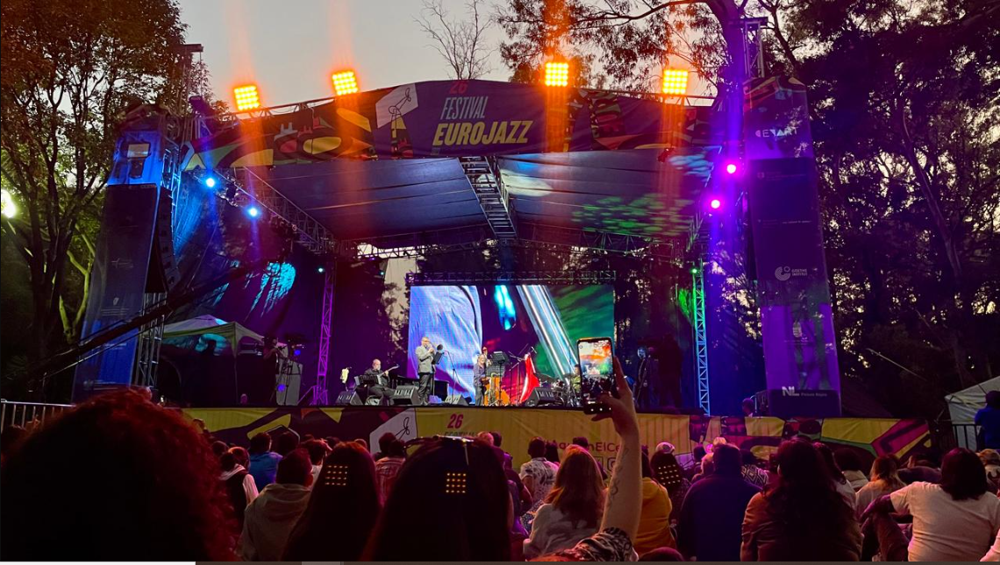

Jazz en la Ciudad de México
Historia del Jazz en la Ciudad de México
El jazz llegó a México a principios del siglo XX y encontró un terreno fértil en la Ciudad de México, donde rápidamente se integró con la vibrante escena musical existente. Durante las décadas de 1920 y 1930, se establecieron lugares emblemáticos como el Salón Rojo y el Salón Colonia, donde se tocaba jazz en vivo y se congregaban músicos y aficionados por igual.
En las décadas siguientes, el jazz experimentó varias influencias, desde el jazz tradicional y el bebop hasta el jazz fusión y la libre improvisación. A lo largo de los años, la Ciudad de México se ha convertido en un punto de encuentro para músicos locales e internacionales, generando una comunidad dinámica que promueve la creatividad y la innovación en el jazz.

Escena Actual
Hoy en día, la Ciudad de México alberga una escena jazzística vibrante y diversa. Hay numerosos clubes, bares y festivales dedicados al jazz que atraen tanto a artistas locales como internacionales. Lugares como el Zinco Jazz Club, el Parker & Lenox, y el Multiforo Cultural Alicia son solo algunos ejemplos de espacios donde se puede disfrutar de actuaciones en vivo de alta calidad.
Además de los espacios físicos, la Ciudad de México cuenta con una comunidad de músicos talentosos que exploran diferentes estilos y fusiones dentro del jazz. Desde el jazz tradicional hasta experimentaciones más vanguardistas, la escena jazzística de la ciudad refleja su diversidad cultural y su capacidad para adaptarse a las nuevas tendencias musicales.

Impacto Cultural
El jazz no solo ha dejado una marca en el ámbito musical de la Ciudad de México, sino que también ha influido en otras áreas de la cultura, como la literatura, el arte y la moda. Su capacidad para mezclar lo local con lo global ha contribuido a enriquecer el panorama cultural de la ciudad y a fortalecer su posición como un centro cultural importante en América Latina.
En resumen, el jazz en la Ciudad de México es más que una forma de música; es un fenómeno cultural que continúa evolucionando y atrayendo a una audiencia diversa que aprecia la improvisación, la creatividad y la pasión por la música.

"El jazz es como una conversación fascinante con millones de posibilidades." - Wynton Marsalis